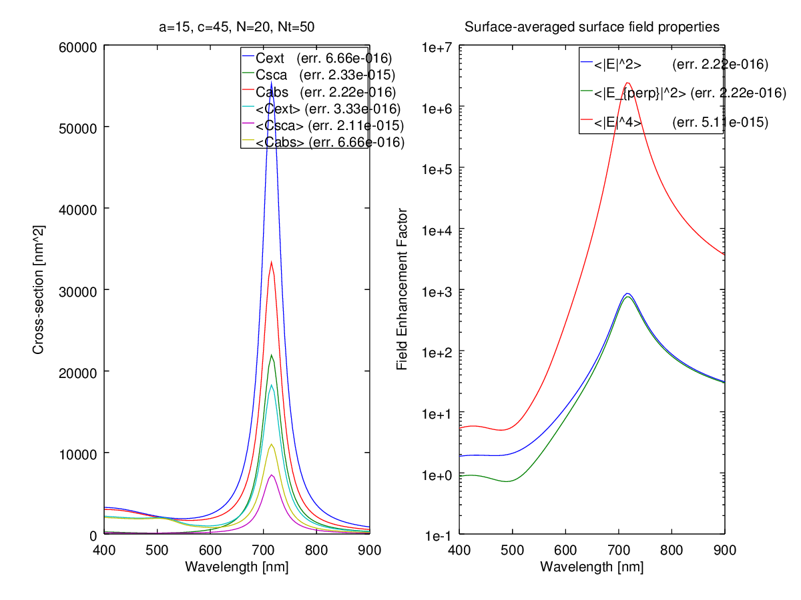

Source code
%% ScriptSolveForNearFieldSpectrum
% Example script showing how to obtain the field expansion coefficients,
% far-field cross-sections and surface field properties for a spheroid in
% fixed orientation, as a function of wavelength.
% Plots the wavelength-dependent spectra for extinction, scattering, and
% absorption cross-sections (fixed orientation as well as orientation-averaged),
% along with lambda-dependent surface-averaged surface field properties.
%%
%% Initialization
%
% Note that you need to run InitPath in the root folder first to add
% required folders to the Matlab path so that functions can be called
% Alternatively, uncomment the following line
%
% run('..\InitPath');
%
% The following parameters should be defined:
%%
% * a: semi-axis along x,y
% * c: semi-axis along z
% * N: number of multipoles for T-matrix
% * nNbTheta: number of thetas for quadratures
% * lambda: wavelength (in same unit as a and c)
% * k1: wavevector in embedding medium (of refractive index nM) (k1=2*pi*nM/lambda)
% * s: relative refractive index (s=n_Particle / nM)
% lambda, k1, and s must be vectors of identical size [L x 1]
clear
close all
%% Parameters of the scattering problem
% We define parameters for a gold nanorod in water, modeled as a prolate
% spheroid
%
% <<../fig/schematicp.png>>
%
a = 15; % in nm
c = 45; % in nm, i.e. 30 x 90nm full-axes
lambda = (400:5:900).'; % in nm
epsilon2 = epsAu(lambda);
epsilon1 = 1.33^2; % for water
% Define incident excitation along main axis
sIncType = 'KxEz';
%% Convergence parameters
% Maximum multipole order for T-matrix and series expansions of fields
N = 20;
% Number of points for Gaussian quadratures to compute integrals in P and Q matrices
nNbTheta = 50;
% Number of points for post-processing (computing the surface field averages)
nNbThetaPst = 360;
%% Collect simulation parameters in a structure
k1 = 2*pi./lambda * sqrt(epsilon1);
s = sqrt(epsilon2)/sqrt(epsilon1);
stParams.a=a; stParams.c=c;
stParams.k1=k1; stParams.s=s;
stParams.N=N; stParams.nNbTheta=nNbTheta;
stParams.lambda=lambda;
stParams.sIncType = sIncType;
% For surface fields, the following parameters are also needed:
stParams.epsilon2= epsilon2;
stParams.epsilon1= epsilon1;
stParams.nNbThetaPst = nNbThetaPst;
% Optional parameters may also be defined as follows:
stOptions.bGetR = true; % This is needed for near fields and will be overridden in any case
stOptions.Delta = 0; % Use Delta=-1 to estimate Delta automatically
stOptions.NB = 0; % NB will be estimated automatically
stOptions.bGetSymmetricT = false;
stOptions.bOutput = false; % false to suppress messages in lambda-loop
%% Solving for the T-matrix (all wavelengths)
tic;
[stC, stAbcdnm, stEsurf] = slvForNearFieldSpectrum(stParams,stOptions);
fprintf('\nT/R-matrices and near fields (N = %d) ... done in %.g seconds.\n', N, toc);
% To test for convergence and accuracy, we choose the wavelength with the largest
% k1|s| and repeat the calculation with N=N+5 and nNbTheta=nNbTheta+5
[~,indWorst]=max(abs(stParams.k1 .* stParams.s));
stParams2 = pstGetParamsStructOneLambda(stParams,lambda(indWorst));
stParams2.N=stParams2.N+5;
stParams2.nNbTheta=stParams2.nNbTheta+5;
% Also add more theta to post-processing to test accuracy of surface averages
stParams2.nNbThetaPst=stParams2.nNbThetaPst+5;
fprintf('Convergence testing for lambda = %.f\n', lambda(indWorst));
tic;
[stC2, stAbcdnm2, stEsurf2] = slvForNearField(stParams2,stOptions);
relerrExt = (abs(stC.Cext(indWorst)./stC2.Cext-1));
relerrSca = (abs(stC.Csca(indWorst)./stC2.Csca-1));
relerrAbs = (abs(stC.Cabs(indWorst)./stC2.Cabs-1));
relerrExtoa = (abs(stC.Cextoa(indWorst)./stC2.Cextoa-1));
relerrScaoa = (abs(stC.Cscaoa(indWorst)./stC2.Cscaoa-1));
relerrAbsoa = (abs(stC.Cabsoa(indWorst)./stC2.Cabsoa-1));
relerrM = (abs(stEsurf.MLocAve(indWorst)./stEsurf2.MLocAve-1));
relerrMperp = (abs(stEsurf.MLocPerpAve(indWorst)./stEsurf2.MLocPerpAve-1));
relerrF = (abs(stEsurf.F0E4Ave(indWorst)./stEsurf2.F0E4Ave-1));
fprintf('\nT-matrix (N = %d) ... done in %.g seconds.\n', N, toc);
%% Plotting the results
fh = figure('Name','ScriptSolveForNearFieldSpectrum');
set(fh, 'Position', [100, 100, 1000, 500]);
subplot(1,2,1)
plot(lambda,[stC.Cext,stC.Csca,stC.Cabs,stC.Cextoa,stC.Cscaoa,stC.Cabsoa]);
legend({['Cext (err. ', num2str(relerrExt,3),')'], ...
['Csca (err. ', num2str(relerrSca,3),')'], ...
['Cabs (err. ', num2str(relerrAbs,3),')'], ...
[' (err. ', num2str(relerrExtoa,3),')'], ...
[' (err. ', num2str(relerrScaoa,3),')'], ...
[' (err. ', num2str(relerrAbsoa,3),')']}, ...
'Location','Best');
title(['a=', num2str(a), ', c=',num2str(c),', N=', int2str(N), ', Nt=', int2str(nNbTheta)]);
xlabel('Wavelength [nm]')
ylabel('Cross-section [nm^2]')
subplot(1,2,2)
semilogy(lambda,[stEsurf.MLocAve,stEsurf.MLocPerpAve,stEsurf.F0E4Ave]);
legend({['<|E|^2> (err. ', num2str(relerrM,3),')'], ...
['<|E_{perp}|^2> (err. ', num2str(relerrMperp,3),')'], ...
['<|E|^4> (err. ', num2str(relerrF,3),')']}, ...
'Location','Best');
title('Surface-averaged surface field properties');
xlabel('Wavelength [nm]')
ylabel('Field Enhancement Factor')
Execution results
octave>ScriptSolveForNearFieldSpectrum
Loop over 101 lambda values...
Calculating surface-fields for all wavelengths...
... done in 14.686 seconds.
T/R-matrices and near fields (N = 20) ... done in 1e+001 seconds.
Convergence testing for lambda = 900
T-matrix (N = 20) ... done in 1 seconds.
warning: legend: 'best' not yet implemented for location specifier
warning: legend: 'best' not yet implemented for location specifier
Generated graphics
